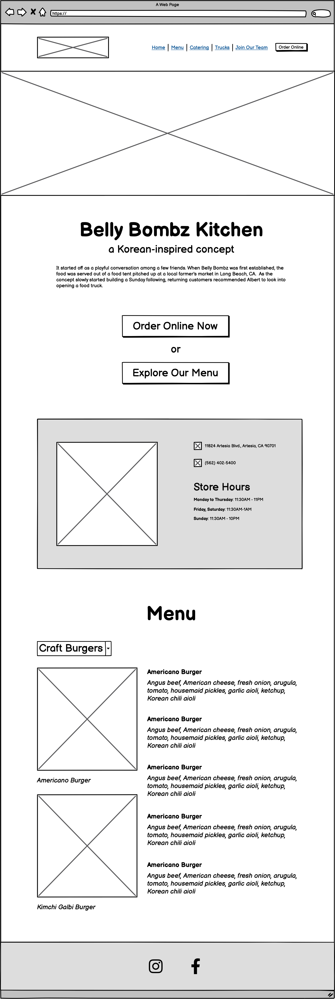
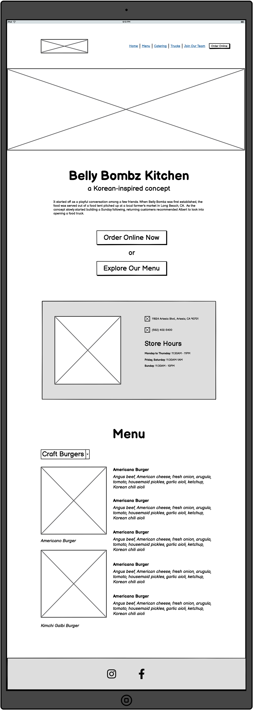
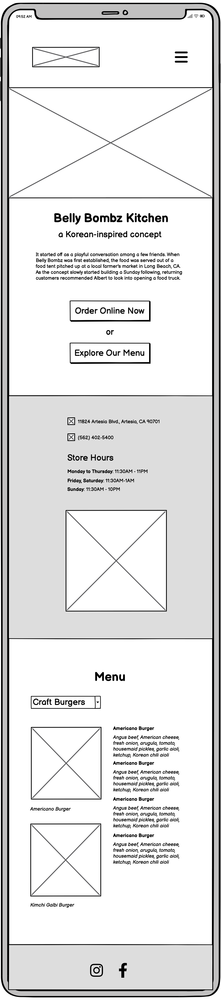
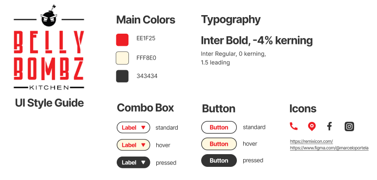
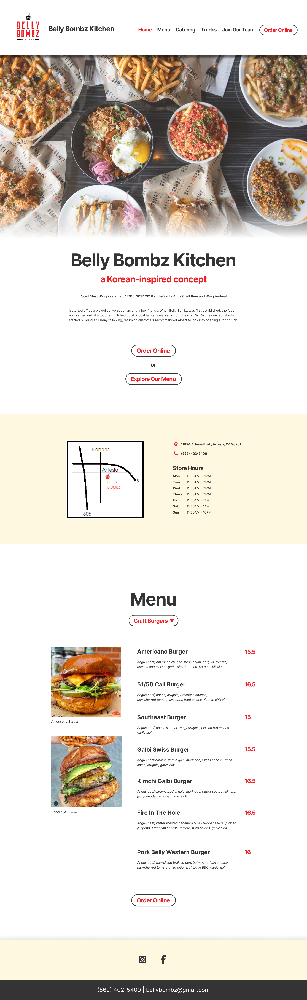
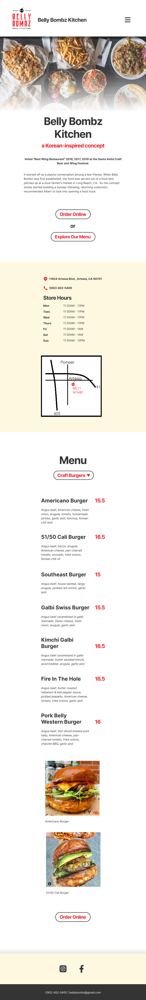
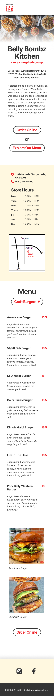

Belly Bombz, Redesigned
I redesigned the homepage of the Belly Bombz website because I found it surprising that the website is poorly designed considering that the restaurant is very well known in the Southern California area, where I'm from.

Redesigned website, live here.
The Original Design
Original website, live here.

Usability Issues
To identify issues with the current interface, I analyzed its learnability, memorability, and
efficiency.
Learnability: Assuming that the typical user is visiting the page
to view the restaurant's menu or place an order online, the current interface doesn't make it
easy to learn to navigate.
- Content and order of elements in navigation bar are unintuitive.
- Linked images in the header may mislead users to think it will lead them to the menu.
- Uninformative and repetitive image carousel.
- Prioritizes information about catering over the regular menu and ordering online.
Memorability: Because the placement of content is unintuitive, the layout of the page is not particularly easy to remember.
Efficiency: The menu and link to order online should be quicker to access through multiple access points.
- At certain viewport widths, the images at the top of the page stack on top of each other and force the user to scroll down a considerable amount to get to the content.
- Having the “Order online now” button lower on the page is inefficient to the user.
Accessibility Issues
Pros: High contrast makes text easy to read.
Cons: The page is image-heavy, but lacks helpful alt tags. Many important text-heavy areas, such as the catering menu, are presented through images, making it impossible for screenreaders to interpret.
The Redesign
Redesigned website, live here.
Low-Fidelity Prototyping
View annotated prototypes here.
Low-fidelity prototype for desktop.
Low-fidelity prototype for tablet.
Low-fidelity prototype for mobile.
Visual Design Guide
High-Fidelity Prototyping
View annotated prototypes here.
High-fidelity prototype for desktop.
High-fidelity prototype for tablet.
High-fidelity prototype for mobile.
